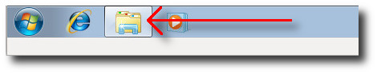
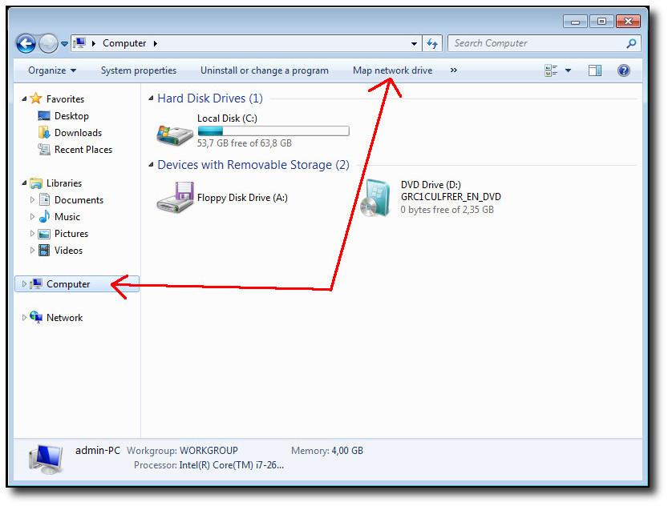
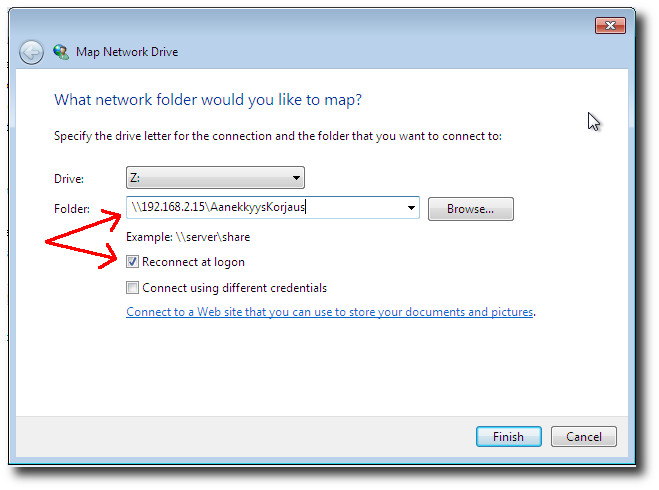
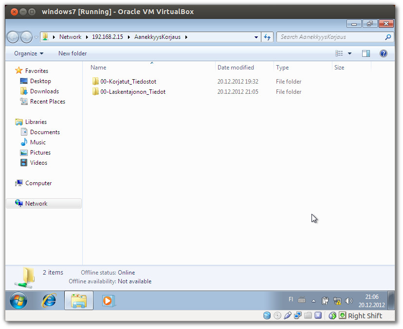

ÄänekkyysKorjaus - palvelimen levyn mounttaaminen windows 7 työasemaan
Käynnistä windowsin tiedostoselain (file explorer).

Klikkaa ikkunan vasemmasta laidasta kuvaketta "Computer" ja
sen jälkeen ikkunan ylälaitaan ilmestyy "Map network drive",
klikkaa sitä.

Seuraavassa ikkunassa windows tarjoaa mountattavalle levylle jotain vapaana
olevaa kirjaintunnusta, esimerkin kuvassa se on Z:
Kirjoita ÄänekkyysKorjaus - serverin osoite ikkunaan.
Huom. Osoitteen pitää alkaa kahdella \ - merkillä ja sen
lopussa pitää olla merkkijono \AanekkyysKorjaus
Huom. Kuvassa oleva verkko-osoite on vain esimerkki, tarkista
tukihenkilöltäsi mikä todellisen palvelimen verkko-osoite on.
Klikkaa luukkuun "Reconnect at logon" rasti, niin windows
mounttaa palvelimen levyn automaattisesti aina kun työasema käynnistyy.
Lopuksi klikkaa "Finish".

Nyt windows mounttaa serverin levyn ja näyttää sen tiedostoselaimen
ikkunassa.
